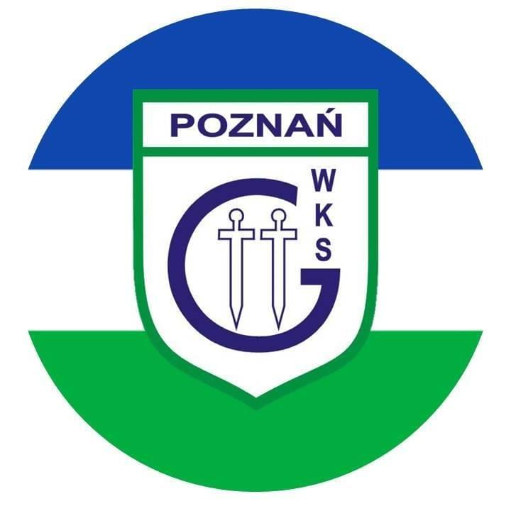
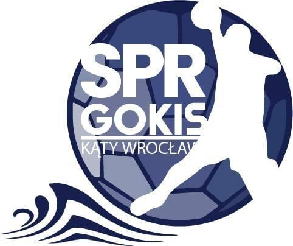
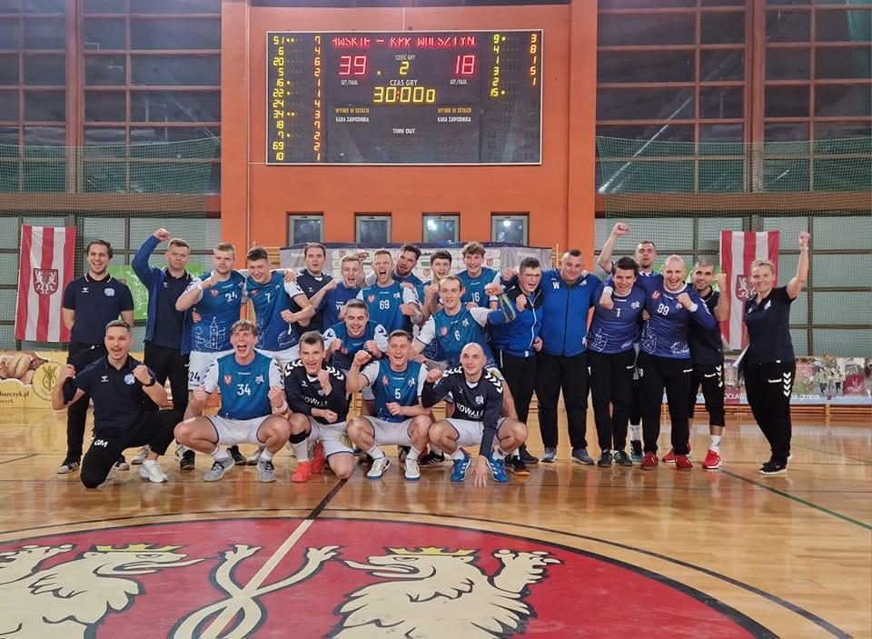
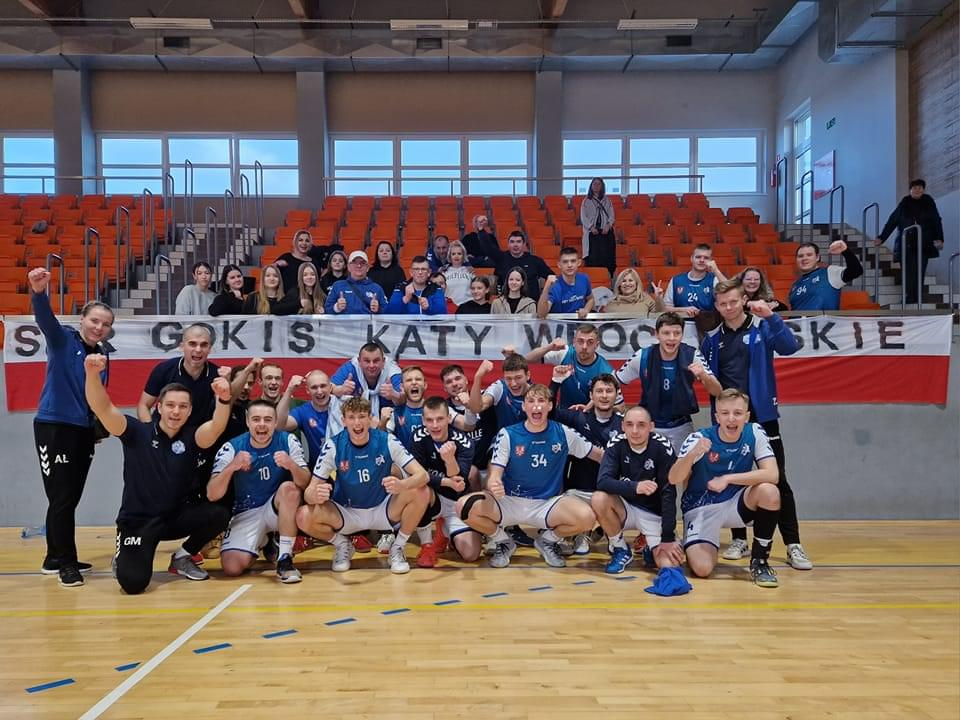
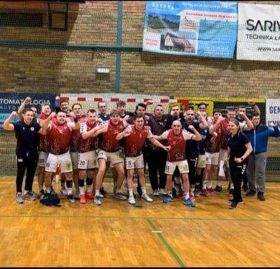

Najbliższy mecz:

WKS Grunwald Poznań
15.02.2023 18:00

SPR GOKiS Kąty Wrocławskie
Aktualnośći
Kącka twierdza wciąż niezdobyta
Dnia 11 lutego 2023 roku o godzinie 19:00 na hali widowiskowo-sportowej w Kątach
Wrocławskich
odbył się mecz piłki ręcznej w rozgrywkach 1 Ligi mężczyzn pomiędzy SPR GOKiS Kąty
Wrocławskie a
KPR Wolsztyniak Wolsztyn. Kąccy szczypiorniści pewnie wygrali spotkanie wynikiem 39:18(19:7)
pozostając niepokonanymi na własnej hali.
Skład SPR GOKiS Kąty Wrocławskie:
Wojtusik B, Gołda K(2), Batura M(4), Kalinowicz O(2), Król D, Kaźmierczak A(1),
Andrzejewski K(1), Furman P(7), Wysocki M(6), Serafin B(1), Kowalik M(4), Andrzejewski
B(3), Rogaczewski P(6), Ostrówka S(2), Massopust P, Ostrowski K.
Skład KPR Wolsztyniak Wolsztyn:
Kierych H(1), Tomak F(1), Pietruszka J(5), Rogoziński M(8), Mały M, Lisiecki Karol,
Pietruszka M(3), Młynkowiak K, Kucza R, Hruświcki W, Piątkowski J, Lewandowski M,
Horowski I, Sudak P

13 zwycięstwo w sezonie dla Katów
W dniu 04.02 nasza drużyna udała się na wyjazd do Kościana w ramach 14 kolejki pierwszej
ligi piłkarzy ręcznych. Kąccy
szczypiorniści odnieśli 13 zwycięstwo w tym sezonie wygrywając z drużyną gospodarzy MKS
Tęczą Folplast
Kościan wynikiem 28:19(9:9)
Skład MKS Tęczy Folplast Kościan :
Omar A, Naglik B(1), Przekwas M(1), Krystkowiak D(1), Graf D(4), Nowak M(1), Olejnik
D(3), Meissner K, Wesołek D(3), Grzesiak D, Noskowiak A, Zaremba W(4), Piątek T(1),
Pieśniak Ł.
Skład SPR GOKiS Kąty Wrocławskie:
Wiciak W, Gołda K, Kalinowicz O(2), Król D(4), Kaźmierczak A(2),
Andrzejewski K(2), Furman P(1), Wysocki M(2), Serafin B, Kowalik M(5), Andrzejewski
B(3), Rogaczewski P(8), Ostrówka S(1),Wasilewicz T, Massopust P, Ostrowski K.

Mecz na szczycie dla Kątów
Dnia 28 stycznia w hali przy ulicy Lotniczej odbył się mecz na szczycie tabeli pierwszej
ligi mężczyzn. Wicelider rozgrywek MSPR Siódemka-Miedź-Huras Legnica podejmował na swojej
hali lidera tabeli SPR GOKiS Kąty Wrocławskie. Mecz był bardzo zacięty lecz finalnie to
Kąccy szczypiorniści wyszli zwycięsko z tego starcia wygrywając "na luzie jedną"
27:26(13:14).
Skład MSPR Siódemka-Miedź-Huras Legnica:
Mazur Ł, Pacek S(4), Przybylak M(3), Czarnecki M(3), Kuliński H(4), Nowosielski D(2),
Kruszelnicki F, Klimaszewski M, Stachurski A, Gregułowski P, Kapela M, Wita K(2), Stańko
M(4), Łukawski K(1), Grozdek P(1), Pacuła W(2)
Skład SPR GOKiS Kąty Wrocławskie:
Wojtusik P, Wiciak W, Gołda K(2),Batura M, Kalinowicz O, Król D(4), Kaźmierczak A,
Andrzejewski K, Furman P, Wysocki M(4), Kowalik M(2), Andrzejewski
B(3), Rogaczewski P(7), Ostrówka S(2),Wasilewicz T(1), Massopust P(2).
